| 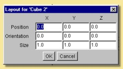 | Creating the primitive via the menu bar is achieved by selecting Object -> Create Primitive and then selecting the appropriate shape. Cones can also be created directly using this method. This method brings up a dialogue box similar to that on the left which allows the exact size, position and orientation of the object to be specified. |
| Primitives
have limited use for creating realistic objects as such objects are
rarely that simple in real life. However they can be useful for
cartoon-like scenes or for building up more complex models using
Constructive Solid Geometry (CSG) via the Boolean tool
like in the simple example on the right: Primitives are also important as they can be the starting points for creating triangle meshes. See 2.1.4 below. |
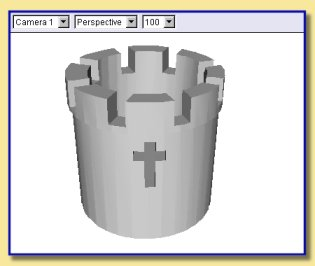 |
| Curves
are created by defining a series of points in any of the viewports.
They can have one of two types of smoothing: 'Interpolating', for which
the curve is forced to pass through the points and 'Approximating'
where the curve does not have to pass through all the points but
is still controlled by them. To create a curve, click on 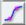 Then click a series of locations on a viewport to define the points as shown on the right. Shift-click to create a sharp corner. To define the last point on the curve and thus end curve point definition, double click. If you wish to automatically close the curve, press the control key and double click. Alternatively to end the curve without adding more points, press Enter to end without closing or control-Enter to close the curve. To control whether you are creating an interpolating or approximating curve, double click . A window will appear where you can select the type of curve to create. |
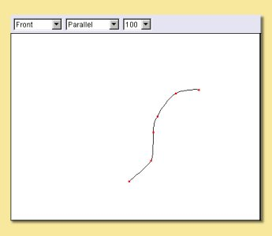 |
| 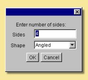 | You can specify how many sides the polygon has and the type of smoothing of the edges. Selecting 'angled' gives the polygon straight edges, while choosing either 'interpolating' or 'approximating' creates rounded edges. Because 'approximating' smoothing does not require the curve to pass through all the points, this results in a smaller overall shape for the 'approximating' polygon. |
| The
figure on the right shows the differences between the 3 types of
smoothing for a 3-sided polygon curve: These were created by clicking once on the polygon tool icon and dragging a rectangular area on one of the viewports to define its size. Note: The Polygon tool can also be used to create 'filled polygon surfaces' which are triangle mesh objects. This is achieved by holding <ctrl> while dragging. |
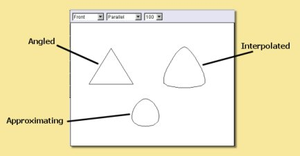 |
| 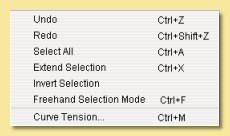 | Undo/Redo
- undoes the last action or redoes something you have just undone,
including selections. Select All - selects all points in curve. Extend Selection - automatically selects adjacent points to those already selected. Invert Selection - deselects all currently selected points and selects all currently deselected points. |
| Curve Tension - This controls the amount by which adjacent points (and possibly beyond) move with currently selected points. Selecting this option produces the dialogue box on the right. The Maximum Distance is the number of points each side of the currently selected point that are affected. The Tension is strength of the attractive effect so that a 'very high' tension will move the affaected points significantly whereas a 'very low' tension will move them only a little. | 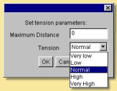 |
| 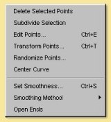 | Delete
Selected Points - deletes all selected points ! Subdivide Selection - A way of adding points to an existing curve, this tool adds a point between each pair of currently selected points. Edit Points - Allows you to explicitly define the coordinates of any point or group of points. A realtime preview of the effect of values entered in the dialogue is shown on the actual curve - cancelling the dialogue causes the curve to revert back to its original shape. Randomise Points - translate points by a random number below a user-specified maximum in any or all 3 axes. |
| Transform Points - brings up
the dialogue on
the right to allow points to be moved, scaled or rotated accurately.
Can also transform about centre of selection or origin of object. |
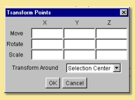 |
| Set Smoothness - If either interpolating or approximating smoothing is used, it is possible to specify the smoothness of individual points. In the example on the right, a heart shape was created with the approximating curve tool. To 'sharpen' the curve in the right places, the points shown were selected and their Smoothness set to 0. This makes them completely sharp but values between 0 and 1 can be used to obtain intermediate smoothnesses. A realtime preview of the effect of smoothness values entered in the dialogue is shown on the actual curve - cancelling the dialogue causes the curve to revert back to its original shape. | 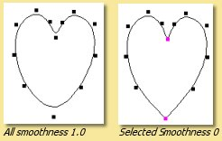 |
| 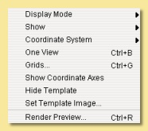 | Display
Mode is irrelevant for curve objects. Show allows the editor to view the Curve or the Entire Scene for the currently highlighted window. Only the curve,however, can be edited. Coordinate System can either be Local or Scene. In the former case, all objects are displayed in a coordinate system that has the curve at the origin. The latter option displays objects as they are in the main view. One View/Four Views toggles between having the four view display or a one view display of the currently selected window Grids allows a grid to be visualised and snapped to. See here for more details. |
| Before
doing that, you can select some of the spline properties by
double-clicking on that same icon. This brings up the dialogue box on
the right: The U and V size boxes determine the physical dimensions of the spline mesh 'sheet', i.e the number of control points in each of the two dimensions. The shape can be either flat, a cylinder or a torus. In the latter 2 cases, to understand the U and V dimensions it may help to think of a rolled-up sheet. For a cylinder, U-size is the number of points around the circumference and V-size is the number of points along its axis. Similarly for a torus, U is along the circumference and V-size is the number of points around the cross-section. The smoothing method can be either 'approximating' or 'interpolating'. See 2.1.2 for an explanation of these terms. The Thickness parameter is only relevant for the torus and controls the cross-sectional diameter as shown on the right. |
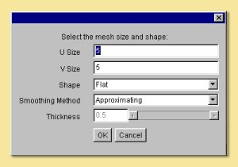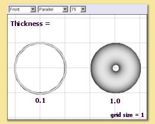 |
| The Edit menu looks like this: | 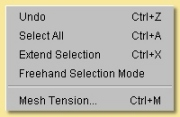 |
| Mesh Tension
- introduces a neighbour attraction effect so that moving a point/curve
also results in (lesser) movement in the points/curves adjacent to it.
The mesh tension dialogue box is shown on the right. The Maximum Distance defines the number of points affected. For example setting this to 2 means that vertices within 2 points along all edges of the mesh will undergo some transformation the magnitude of which decreases with distance from the selected point. The example on the far right illustrates this. The pink point is the selected vertex; the green points are those that would be affected if Maximum Distance was set to 2. The Tension defines the strength of the attractive effect so that a 'very high' tension will move adjacent points significantly whereas a 'very low' tension will move them only a little. |
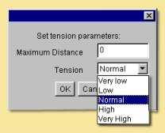 | 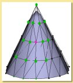 |
| 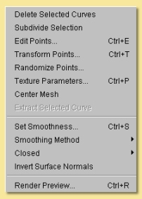 | Delete
Selected Curves - deletes all selected
curves Subdivide Selection - this only works on a set of adjacent curves and creates a new curve between each adjacent curve as shown below. This can help produce a smoother finish and in adding small details to a mesh. 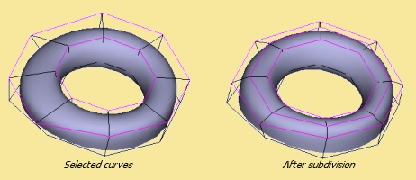 |
| The View menu is like this: | 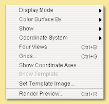 |
| The Color Surface By submenu allows the surface to be coloured according to bone weights (if the object has a skeleton) or by texture parameters (if any have been set) | 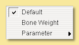 | See the section on triangle meshes for more details. |
| The Show submenu allows various items to be displayed or hidden on the view. | 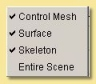 | See the section on triangle meshes for more details. |
| 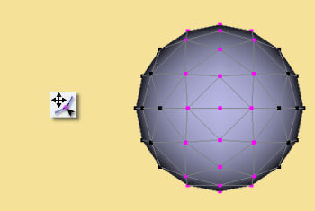 | The
move/select tool allows vertices, edges or faces to be selected and
moved. Selected geometry is shown
in pink and will be affected by any tool then activated. Geometry is
selected either by clicking directly
on the point/edge/face or by dragging a rectangular region or marquee
around the geometry you want to
select. A freehand tool is also available via the Edit
menu. Further geometry can be added to
the selection by holding Shift while clicking on currently unselected
geometry. Geometry can be removed from the selection by Shift clicking
already-selected points/edges/faces or by Ctrl dragging a region over
the part of the model that needs to be de-selected. This tool also allows selected geometry to be moved by clicking on part of the selecting and dragging or by using the arrow keys - pressing Ctrl with the up and down arrow keys moves selected geometry in and out of the screen plane. Holding ALT while pressing the arrow keys moves the points by 10 pixels. The remaining tools will be demonstrated as their effect on the selection shown on the left. |
| 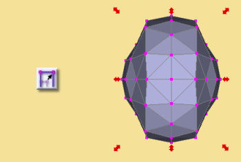 | The mesh scale tool stretches or squashes the current selection by grabbing one of the handles and dragging. The scaling operation can be controlled using the Shift and Ctrl keys; pressing Shift while dragging performs a uniform scale (i.e. keeps the proportions of the selected geometry the same) and pressing Ctrl centres the scale. The image of the right is the result of applying a scaling operation to the points selected; in this case both Shift and Ctrl keys were pressed. |
| 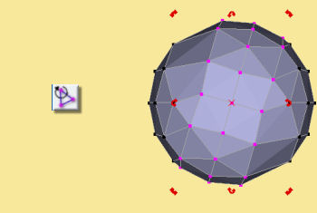 |
This tool rotates the currently selected geometry as shown on the left. The choice of handle dictates the axis in which the rotation is carried out. The centre of the rotation is shown by the red cross; this can be moved by pressing Ctrl and clicking on the desired centre. |
| 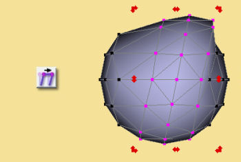 | This tool deforms the selected geometry by performing a skew operation, i.e. geometry is shifted according to its distance from the handle, as shown on the left. Pressing Shift while dragging performs a uniform skew and Ctrl performs a centred skew operation. |
| 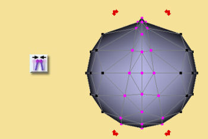 | The taper tool scales geometry depending on its distance from the handle used, as shown on the left. As with many of the other tools, the operation can be modified to a uniform one by Shift-dragging and a centred one by Ctrl-dragging. The result on the left was obtained by Ctrl-dragging the top handles inward. |
| 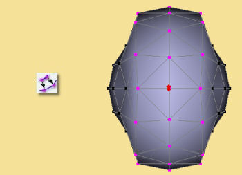 | This tool deforms geometry by moving vertices inward or outward along their normals. There are no handles for this tool; the operation is performed by simply dragging up or down on the viewport. In some situations the result is often quite similar to a centred uniform scale as seen on the left but, in other cases, the results are markedly different. |
| The 'gizmo'
consists of 3 circles, each defining a rotation plane, 3 coordinate
axis lines and a sphere at the centre. Each axis has a letter (x, y or
z) in a square and a diamond handle. Free movement of the entire selection is performed by dragging the central sphere. Movement in a particular axis is acheived by clicking and dragging left/right on the appropriate letter square. Scaling in a particular direction is achieved by clicking and dragging on the appropriate diamond. Uniform scaling is performed by holding shift whilst dragging. Rotation is achieved by clicking on the appropriate circle and dragging in the required direction. The entire 'gizmo' can be resized by holding the control key whilst dragging on any of the diamond handles. |
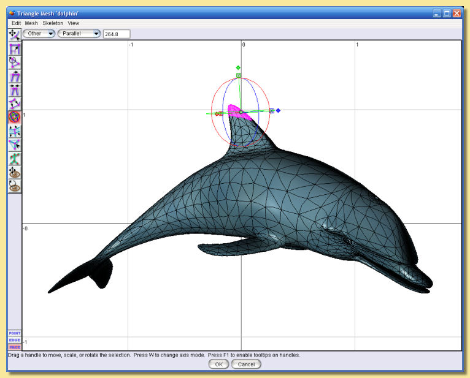 |
| In Point mode, dragging on an existing vertex creates a new point which is attached to the original one as shown in the figure on the right: | 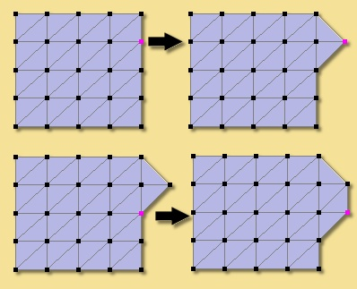 |
| In Face mode, you can create new vertices in the middle of faces by clicking at the appropriate location. In the example on the right, a new vertex is created by clicking at the location shown in 1, as shown in 2. Similarly for 3 and 4. | 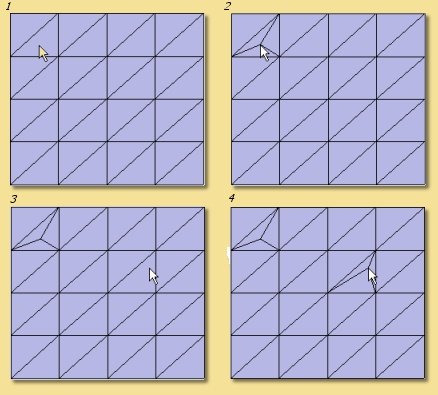 |
| This
is the Edit
menu: |
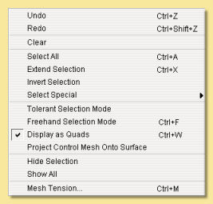 |
| Select
Special
allows selection of geometry using several options from the below
sub-menu: 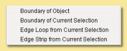 |
Boundary
of Object -
if part of the mesh is open, you can select the boundary by selecting
this option. See example below: 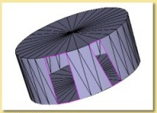 Boundary of Current Selection - this tool selects the edges which outline the currently selected geometry as in the example below: 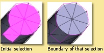 |
Edge
Loop of Current Selection - selects edges that are close to
parallel and are joined to form an edge loop as below: |
Edge
Strip of Current Selection - selects edges which are close
to parallel but are separated
by one edge. This is often useful when followed by edge subdivision of
the resulting selection to
produce a new edge loop: |
| Hide Selection allows selected geometry to be hidden as shown on the right. This is useful when editing complex meshes where visibility is can be a problem due to overlying geometry. Show All shows all currently hidden geometry. |
| Subdivide
Selected Faces/Edges - In face/edge editing mode, any
faces/edges selected will be subdivided. This is useful for allowing
extra detail to be added to particular parts of the mesh. This works
differently for edges and faces even if the original
selection is the same as shown below: |
| Bevel/Extrude
Selection - This is a very useful tool for extending the
geometry of existing meshes. This works like the Bevel/Extrude tool
except that you can specify the values for Bevel and Extrude
accurately. The function works on points,
edges or faces. In the case of faces, the whole selection or individual
faces can be bevelled or
extruded. In all cases, you specify the length to extrude by and the
width of any bevel. An example
applied to faces is demonstrated on the left: See the Bevel/Extrude tool
for other examples Texture parameters - allows specific vertices to be identified with parameters in the texture. See Textures and Materials for more details. Optimize Mesh - re-orders the edges in the mesh to give a smoother-looking mesh. This works particularly well for meshes which have acquired vertices with many edges when 'pinching' can occur. Center Mesh - moves the centre of the mesh to the origin. |
| The View
menu is like this: |
| The Color Surface By submenu allows the surface to be coloured according to bone weights (if the object has a skeleton) or by texture parameters (if any have been set). In the examples below, selecting a bone in the fox's leg shows in green the bone influence on the mesh surface. In this case, there is a smooth transistion in weights and hence in shades of green, as opposed to the case below right in which the whole surface has an IK Weight of 1 and is therefore shown as uniformly green. |

| The Show
submenu
allows various items to be displayed or hidden on the for the currently
highlighted view as demonstrated in the examples below: |
| To
create a skeleton, enter the mesh editor by double-clicking a mesh
object, and click on To define a new bone, <ctrl> click at the required place. The first bone defined is called the 'root'. Now <ctrl> click further along the mesh. A new cross is created and the two are joined by a kite shaped 'bone'. This process can be repeated as often as necessary as shown in the simple example on the right: The shape of the kite is important; the thin end points towards the root end of the skeleton and the thicker end points towards the extremity. Once created, bones can be selected by clicking on the cross at their end. The currently selected 'joint' is shown in pink. <ctrl> clicking somewhere while a joint is selected will add a new bone connecting the new location to that joint. To start a separate bone chain, ensure that there are no bones currently selected by clicking on the editor window away from any existing bones. The 'base' joint is shown in green. Any existing joint can temporarily be made a 'base' by <shift> clicking it. This is a way of restricting movements of the skeleton; any bones between the base and the root will remain fixed while bones further towards the extremity will be able to move. Art of Illusion allows any number of bone joints to be anchored or 'pinned' in this way. |
| This
shows a more complicated example of an arm. The 'root' is defined
at the shoulder joint, then there
is a bone to represent the upper arm ending at the elbow. From there is
the bone from the elbow to the
wrist and from the wrist to the centre of the hand. Now it becomes more
complicated; individual bone
chains run from this central hand joint to each of the digits (click
back on the central hand joint to
start each digit chain). Note that the skeleton editor normally does a good job of positioning the depth of the skeleton as it is drawn over the mesh. This will work best, however, is the mesh is kept in one plane. |
| The IK (Inverse Kinematics) Weight defines how the mesh will deform as the bones attached to it move. If the IK Weight of a point was set to 1.0, then it would be affected only by the nearest bone. This can lead to problems where adjacent points are nearest to different bones. In this case, one point would move with one bone and its neighbour would not. To overcome this, Art of Illusion can make points be affected not only by the nearest bone but also by that bone's parent (i.e. the next bone towards the root). When the skeleton is bound to the mesh using this dialogue, the program blends these weights to make the surface move smoothly; points near the centre of the bone will have weights close to 1 whereas points near joints will have lower weights. The IK Weight Blending value defined here sets the size of the region around each joint that will use lower weights. |
| Just to reiterate, the IK Weight is the relative effect of the nearest bone over its parent bone, so a value of 0.5 means that the point is affected equally by the nearest bone and its parent, a value of 0.8 means that the effect of the nearest bone predominates over its parent. (80% vs 20%). |
| At the
top is the name of the bone and this can be changed to anything
you like. The next 2 properties that can be altered are the X-bend and Y-bend. These are rotations of the bone around the parent joint (the one at the thin end of the kite) and can either be left and right or forward and backward. One will be the X-bend and the other the Y-bend. As you change the values in these boxes, the skeleton be be updated in real time. The circular device shown beside each type of angular motion can also be used to move bones. The black square handle on the outer circle can be grabbed and moved around to alter the relevant degree of motion. Rotation around either the X or Y direction can be completely disabled by checking the Lock box. Alternatively, the maximum angles of bend in each direction can be restricted by checking the Restrict Total Range box and then entering the extreme values in the 2 boxes below. This 'blacks out' the forbidden range of angles in the circular device. In addition, you can set another range with the Restrict Comfort Range which is the range that the bone will normally reside in and will only go outside when forced to. The circular device shows in grey the range of angles outside of the Comfort Range. Finally there is the ability to set the Stiffness of the joint which is a way of making some joints in the chain more easily bent than others. |
| Edit
Bone displays the dialogue to set bone
movement restrictions detailed above. Delete Bone deletes the currently selected bone. |
| [LEFT]
Let's say I wanted to delete the bone between joints 2 and 3 in
the top diagram. The parent joint
of this bone is 2. If I selected joint 3 and tried to delete it, I
would have to delete all the
children of that bone as well, i.e. all the finger joints. However it can be done as follows. First we change the parent of bone 4 from its current parent, i.e. 3, to 2. This is done by selecting bone 4, clicking on Skeleton -> Set Parent and choosing Bone 2 from the list. The bone hierarchy changes as shown in the centre diagram. All we need to do now is select the unwanted bone and delete it. [BELOW] Bones can be inserted in a similar way - effectively we replace one existing bone with 2 or more. Click on the bone to replace and set its parent bone to None - this will break the bone chain. Now select the bone onto which you want to join the new bones and Ctrl click the new bones as usual. To join the last bone onto the end of the rest of the bone chain, select the end of the chain and set its parent to the last new bone. |
| Undo/Redo
- undoes the last action or redoes
the last undo, including selections. Select All - selects all the points in the curve. Extend Selection - adds points immediately adjacent to all those currently selected to the selection. Invert Selection - deselects currently selected points and selects currently deselected points. |
| Delete
Selected Points deletes all selected
points from the tube curve. Subdivide Selection adds points between any adjacent selected points. Edit Points brings up a dialoguw allowing the x, y and z coordinates of selected points to be explicitly specified. A realtime preview of the effect of values entered in the dialogue is shown on the actual tube object - cancelling the dialogue causes the tube to revert back to its original shape. Transform Points allows selected points to be moved, rotated or scaled by specified values. Transformations can be around the centre of the selection or the origin of the object. Randomise Points - translate points by a random number below a user-specified maximum in any or all 3 axes. Texture parameters - allows specific points to be identified with parameters in the texture. See Textures and Materials for more details. |
| Set Thickness - sets the
diameter of the tube
at all selected points to the value specified. See
the example on the right: Center Tube - moves the centre of the tube to the origin. Set Smoothness - This refers to the smoothness of the tube itself rather than the curve. Low values represent sharp bends and high values smooth bends. The smoothness can be set for any point along the tube. A realtime preview of the effect of smoothness values entered in the dialogue is shown on the actual tube - cancelling the dialogue causes the tube to revert back to its original shape. Smoothing Method - As with meshes and curves, the smoothing method can be varied. Tube objects can have None, Interpolating, in which the centre of the cross-section is forced to go through the control points, and Approximating which is not so restrictive. Tube Ends - This controls how the ends of the tube look. The options are Open Ends where the tube looks hollow, Closed Ends where the 2 ends of the tube are joined together to form a continuous loop (see right) and Flat Ends where the ends are 'sealed' to give the impression of a solid rod. |
| Display
Mode - switches between wireframe,
shaded, smooth or transparent display for the currently highlighted
view, as in the main window. The Show submenu allows various items to be displayed or hidden on the view as demonstrated above: Coordinate System - Here you can choose to work with the mesh in its Local coordinate system or in the Scene coordinate system. This will affect the orientation and position of the mesh. Grids - As in the main window, Grids can be shown and, if necessary, used to snap objects to. |